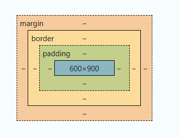

CSS (Cascading Style Sheets) is a language used to describe the presentation and design of HTML documents. It allows developers to control the layout, colors, fonts, and overall appearance of a webpage.
1. Basic Syntax
A CSS rule is made up of a selector and a declaration block.
• Selector: Targets the HTML elements (e.g., p for tags).
• Property: The design feature (e.g., color).
• Value: The property’s specification (e.g., blue).
2. Selectors
• Universal Selector: * (selects all elements).
• Type Selector: Targets a specific tag (e.g., h1, p).
• Class Selector: .className (e.g., .button).
• ID Selector: #idName (e.g., #header).
• Group Selector: Combines selectors (e.g., h1, p).
• Descendant Selector: parent child (e.g., div p).
3. Box Model
CSS elements are structured like a box:
• Content: The text or image inside.
• Padding: Space between content and border.
• Border: The edge of the element.
• Margin: Space between elements.
A box model is given below:
In Short & Detail:
Cascading Style Sheets (CSS) is a powerful styling language used to define the visual presentation of HTML documents. It allows developers to separate content from design by controlling the layout, colors, fonts, and spacing of web pages. CSS follows a cascading priority system, meaning styles can be applied inline within HTML, embedded in a style tag, or linked externally via a `.css` file. This modular approach enables consistent styling across multiple pages while simplifying maintenance.CSS operates on a box model, which defines the structure of each element using content, padding, borders, and margins. With a wide range of properties and selectors, it supports fine-tuned customization for everything from typography to responsive layouts. Advanced features like media queries and CSS Grid or Flexbox enable the creation of modern, mobile-friendly designs, making CSS an essential tool in web development.